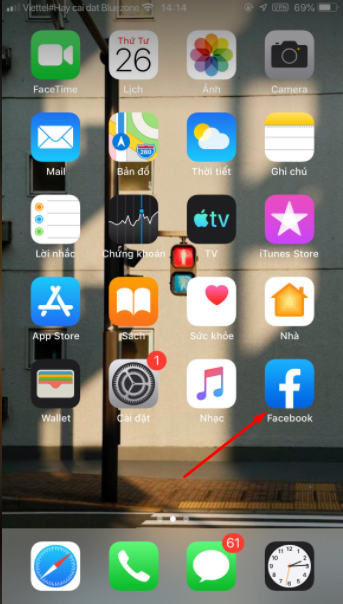

Cách đăng ký, tạo mới tài khoản Facebook cực đơn giản

Ty Nguyen
CEO ❤️ AhaChat. Love babies & chatbot.Chắc hẳn, trong thời đại công nghệ phát triển như vũ bão hiện nay, mạng xã hội Facebook đã không còn xa lạ với đại đa số người dùng trên thế giới. Hầu như ai cũng sở hữu cho riêng mình một tài khoản Facebook cá nhân để có thể giao lưu kết bạn, cập nhật các thông tin xã hội, trao đổi các thông tin rất dễ dàng. Vậy nếu bạn là người mới, chưa có tài khoản Facebook thì còn chần chừ gì nữa mà không tạo riêng cho mình một tài khoản để sử dụng. Nếu chưa biết cách tạo tài khoản Facebook, bạn đừng bỏ lỡ bài viết dưới đây nhé!
1. Hướng dẫn cách tạo tài khoản Facebook trên máy tính
Để tạo tài khoản Facebook mới trên máy tính, bạn thực hiện theo các bước sau:
Bước 1: Bạn vào trình duyệt web trên máy tính của bạn, truy cập vào website facebook.com. Tại giao diện đăng nhập vào tài khoản Facebook, bạn bấm chọn Tạo tài khoản mới.
Bước 2: Sau khi bạn bấm vào Tạo tài khoản mới, cửa sổ đăng ký tạo tài khoản Facebook xuất hiện, bạn điền đầy đủ thông tin Facebook yêu cầu, bao gồm:
Tên tài khoản Facebook mà bạn muốn hiển thị trên Facebook
Nhập email hoặc số điện thoại bạn đang sử dụng để tạo tài khoản
Nhập lại email hoặc số điện thoại
Nhập mật khẩu để sử dụng khi đăng nhập vào tài khoản Facebook sau khi tạo
Nhập ngày tháng năm sinh, bạn nên nhập ngày tháng năm sinh khớp với trong chứng minh thư để lấy lại nick trong trường hợp xấu
Cuối cùng là chọn giới tính mà bạn muốn hiển thị trên Facebook.
Sau khi nhập đầy đủ các thông tin mà Facebook yêu cầu khi tạo tài khoản mới, bạn bấm chọn vào Đăng ký.
Bước 3: Nhập mã xác nhận được Facebook gửi về số điện thoại hoặc email
Nếu bạn sử dụng số điện thoại để đăng ký tài khoản Facebook thì mã xác nhận được gửi sms qua số điện thoại của bạn, còn bạn sử dụng email để đăng ký thì mã xác nhận được gửi về email.
Khi nhận được mã xác nhận, bạn nhập mã vào như hình dưới sau đó bấm vào Tiếp tục.
Sau khi bạn nhấn vào Tiếp tục, sẽ có thông báo đã xác nhận tài khoản email của bạn, bạn bấm chọn Ok.
Bước 4: Hoàn tất việc tạo tài khoản Facebook.
Khi bạn hoàn tất việc tạo tài khoản Facebook thành công, sẽ tự động đăng nhập vào tài khoản Facebook của bạn. Tại đây bạn có thể cập nhật thêm các thông tin cho tài khoản Facebook cá nhân để hoàn thành việc tạo tài khoản Facebook.
Như vậy chỉ với vài bước cơ bản là bạn đã tạo thành công tài khoản Facebook để sử dụng. Lần sau khi muốn vào tài khoản Facebook mới tạo, bạn chỉ cần đăng nhập bằng email hoặc số điện thoại bạn đăng ký là có thể truy cập vào được tài khoản.
2. Hướng dẫn tạo tài khoản Facebook trên điện thoại
Nếu bạn không có máy tính để sử dụng, bạn có thể tạo tài khoản Facebook ngay trên chiếc điện thoại di động của bạn. Cách tạo tài khoản Facebook trên điện thoại như sau:
Bước 1: Bạn tải ứng dụng Facebook trên điện thoại, biểu tượng Facebook có chữ màu trắng nền xanh, sau đó truy cập vào ứng dụng Facebook.

Bước 2: Tiếp theo đó, bạn bấm chọn Tạo tài khoản mới để bắt đầu tạo tài khoản Facebook.
Bước 3: Bắt đầu quá trình tạo tài khoản Facebook.
- Bạn bấm chọn Bắt đầu để bắt đầu quá trình tạo tài khoản Facebook
- Sau đó nhập Họ tên bạn muốn hiển thị tên này là tài khoản Facebook của bạn (họ tên không bắt buộc phải là tên thật của bạn).
- Sau khi nhập tên xong, tiếp tục bạn nhập ngày sinh của bạn, nhập xong ngày sinh bạn bấm Tiếp tục.
- Kế tiếp ngày sinh, bạn tích chọn vào giới tính của bạn, sau đó bấm Tiếp.
- Tiếp theo, bạn nhập số di động hoặc email đang sử dụng để đăng ký tài khoản Facebook, rồi bấm Tiếp tục.
- Cuối cùng, nhập mật khẩu để hoàn tất việc tạo tài khoản Facebook.
Bước 4: Sau khi hoàn tất điền các thông tin để tạo tài khoản facebook, bạn bấm chọn Đăng ký.
Sau khi bạn bấm Đăng ký, Facebook sẽ tạo cho bạn tài khoản và tự động đăng nhập tài khoản đó trên điện thoại của bạn.
Như vậy, bạn đã tạo thành công tài khoản Facebook trên điện thoại chỉ với vài bước đơn giản.
Bài viết trên đây đã hướng dẫn bạn cách tạo tài khoản facebook mới trên điện thoại và máy tính chỉ với vài thao tác đơn giản. Trong quá trình bạn thực hiện, có thắc mắc hay gặp khó khăn ở thao tác nào hãy để lại câu hỏi ngay mục bình luận dưới đây để chúng tôi hỗ trợ giải đáp cho bạn nhé. Chúc bạn thực hiện thành công.